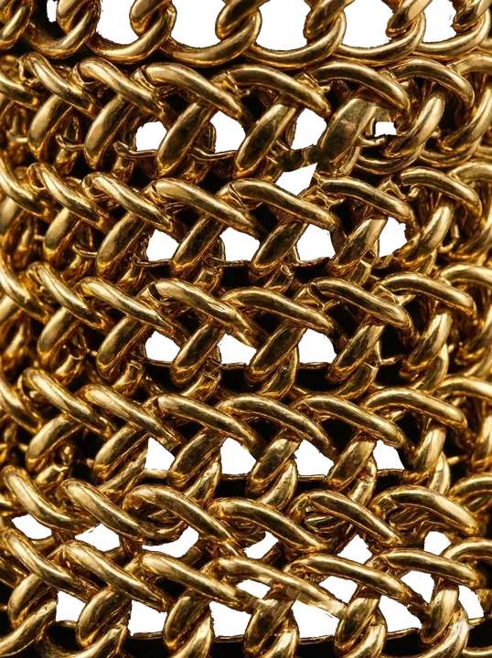
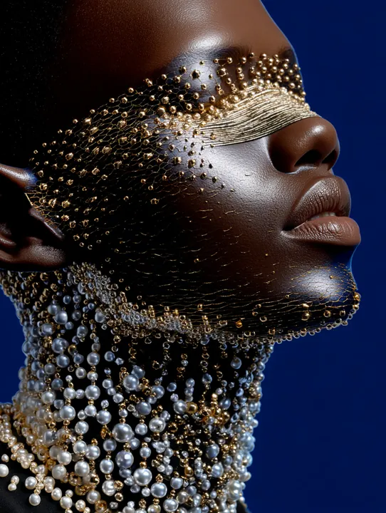
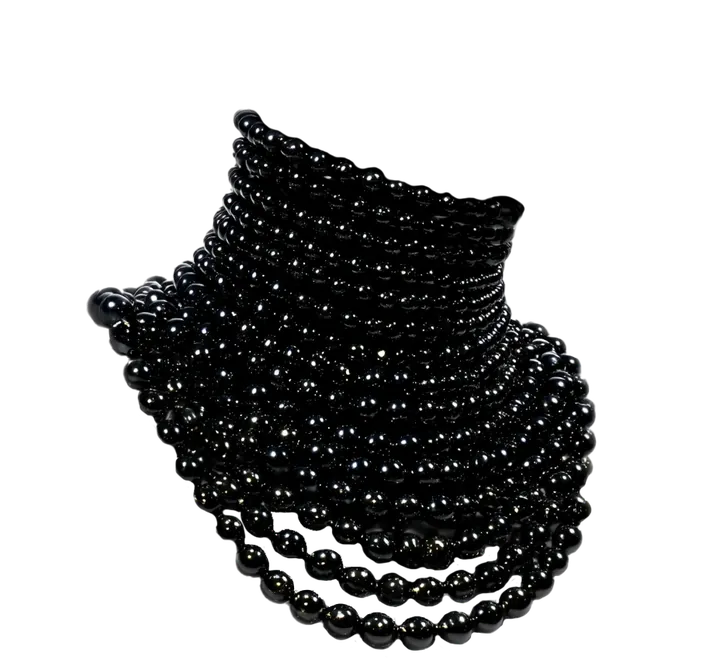
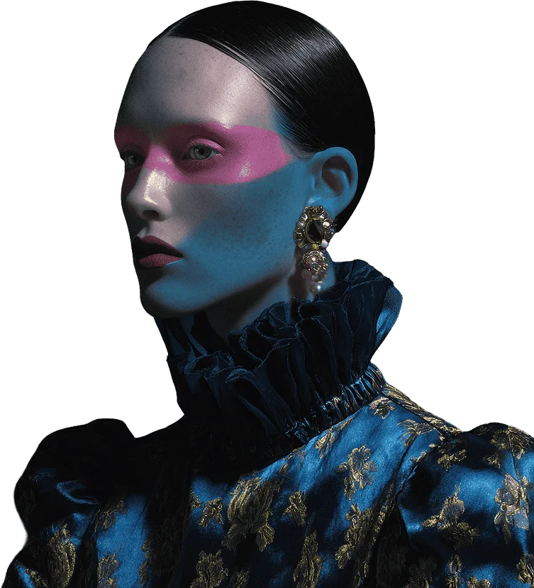
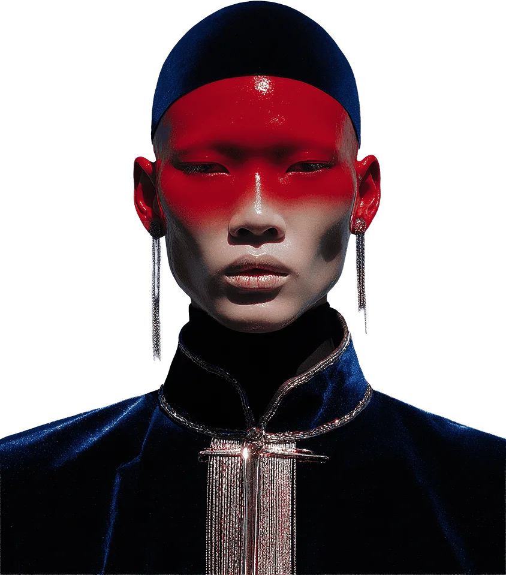
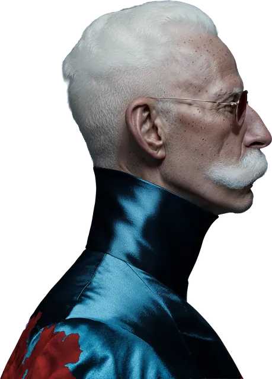
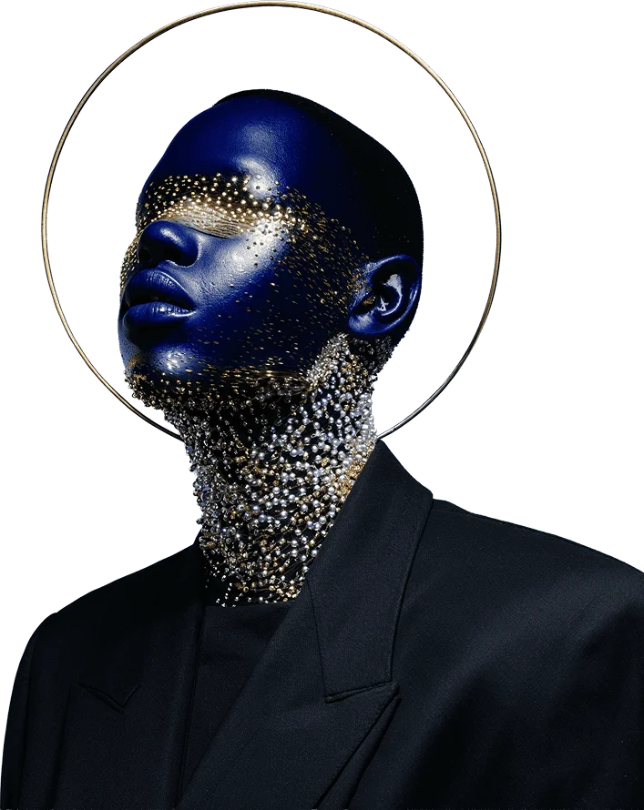

The house of Neon Relics
A small jewelry house in SoHo, New York. Four characters, six relics. Every piece is made once and fitted in person.
Explore collection-
03

-
006
-
04

-
05

-
008
- The capsule
- 4 looks · 6 relics
- Editions
- Every piece exists once
- The atelier
- By appointment · SoHo, New York
How a relic
is made
-
01
The character
Every relic starts as a person, not as a jewel. Who wears it, and what should a room feel when they walk in?
-
02
The material
Gold-plated brass, freshwater pearls, black glass. Each one is chosen for how it holds a single hard light.
-
03
The fitting
The piece is finished on the wearer, in the atelier. It leaves only when it sits exactly right.
A private
ritual
of
adornment
Neon Relics exists in the space where high fashion crosses over with interface design. Each piece is a silent signal: it states something without saying it, occupying space without asking permission.
We don't follow seasons or trends. We create relics, objects that amplify what already exists inside the wearer.
We design for the ones who…
-
01 
→ Choose presence over noise.
-
02 
→ Prefer mystery to explanation.
-
03 
→ Know that one piece is enough to shift the entire reading of a silhouette.
-
04 
→ Want their style to be a code, not an algorithm.
Join the inner frequency
No spam, no algorithms. Just a notice when a new chapter of the collection opens.
Visit the
atelier
There is no shop window. Relics are shown one visitor at a time, in a private room, after the capsule is sealed.
- Where
- SoHo, New York The exact address is shared with your invitation
- When
- Thursday to Saturday, 12:00–19:00 By appointment only
- Write
- atelier@neonrelics.example We reply within two days
- Follow
- @neonrelics New chapters are announced here first
Neon Relics is a concept project. The atelier, address and email are fictional.